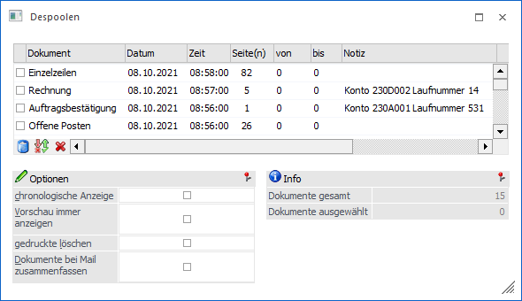
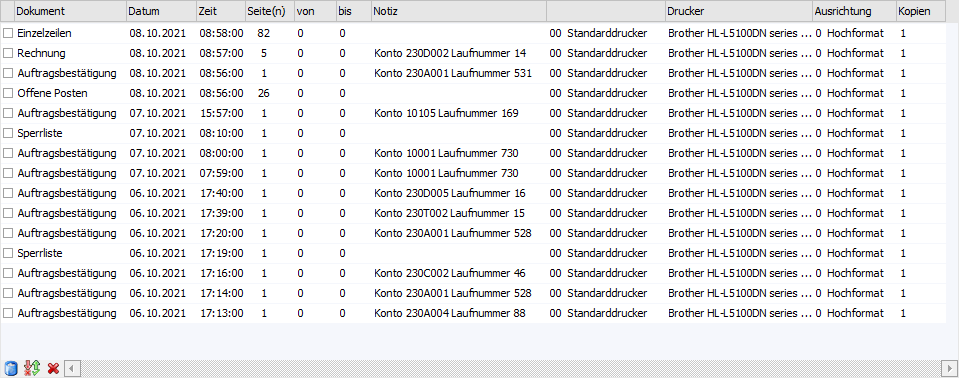
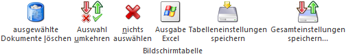
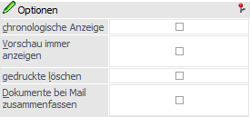
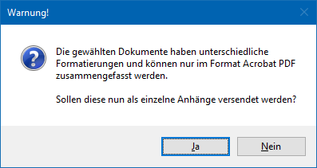
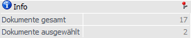
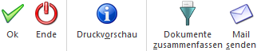

Wenn in einem WinLine Programm etwas ausgedruckt werden soll, kann in der Regel gewählt werden, ob der Ausdruck am Bildschirm angezeigt oder auf den Drucker ausgegeben werden soll.
Wählt man "Ausgabe Drucker", so ist es von der Schlüsselung "Ausgabe in Spooler" / "Ausgaben auf Drucker" abhängig, ob der Druck tatsächlich auf dem Drucker passiert oder in eine Datei (dem Spooler) abgelegt wird (nähere Informationen entnehmen Sie bitte dem Kapitel Der Druckvorgang).
Die Ausdrucke, die sich im Spooler befinden, können zwar nicht mehr verändert, jedoch betrachtet, gedruckt und gemailt werden. Der Spooler an sich ist in jeder Applikation über den Menüpunkt
1 Datei
1 Despoolen
aufrufbar. Zusätzlich steht der Button "Despool" im MESONIC-Ribbon zur Verfügung.
Hinweis
Sollten keine Druckaufträge zum Despoolen vorhanden sein, so wird auch das Fenster "Despoolen" nicht geöffnet.

Beim Öffnen des Fensters werden die Dokumente standardmäßig nach Datum/Zeit absteigend sortiert. D.h. das zuletzt gedruckte Dokument erscheint an erster Stelle in der Tabelle.
Tabelle "Dokumente"

Folgende Informationen sind in der Tabelle enthalten, wobei einzelne Einstellungen (z.B. Drucker) editiert werden können:
Ø Auswahl
In der ersten Spalte wird eine Checkbox angezeigt. Ist die Checkbox aktiv, wird das Dokument bei den nachfolgenden Aktionen berücksichtigt. Ist die Checkbox inaktiv, dann bleibt das Dokument unberührt.
Ø Dokument
Hier wird der Dokumentenname angezeigt, der aus der Beschreibung des Formulars übernommen wird.
Ø Datum / Uhrzeit
Hier wird angezeigt, wann das Dokument erzeugt wurde.
Ø Seite(n)
Es wird die Anzahl der Seiten angezeigt, die das Dokument enthält.
Ø von / bis
Wenn das Dokument mehrere Seiten hat, kann hier die Anzahl der Seiten eingeschränkt werden, die dann weiterbearbeitet werden sollen.
Ø Notiz
Bei bestimmten Ausdrucken wird auch das Notizfeld vom Programm gefüllt (Belege aus der Belegbearbeitung, Mahnungen, Lohnzettel) - damit kann eine leichtere Unterscheidung zwischen den Dokumenten vorgenommen werden.
Ø Drucker
Hier wird der Drucker (inkl. Druckername) angezeigt, mit dem das Dokument ursprünglich gedruckt wurde. Aus der Auswahlliste kann ein alternativer Drucker ausgewählt werden, wobei alle WinLine-Drucker zur Verfügung stehen.
Ø Ausrichtung
Hier wird die Ausrichtung angezeigt, mit der das Formular gedruckt wurde, wobei hier die Einstellung aus dem Formular übernommen wird. Wird hier eine Änderung vorgenommen, wird die Einstellung aus dem Formular übersteuert.
Ø Kopien
Es wird die Anzahl der Kopien angezeigt, die - gesteuert vom Formular bzw. von anderen Einstellungen - ausgegeben werden sollen. Wenn der Eintrag verändert wird, wird die Anzahl der Kopien gemäß der neu vorgenommenen Einstellung durchgeführt.
Tabellenbuttons

Ø ausgewählte Dokumente löschen
Mit dem Button "ausgewählte Dokumente löschen" werden die ausgewählten Dokumente gelöscht.
Ø Auswahl umkehren
Mit diesem Button kann die vorgenommene Selektion in das Gegenteil gekehrt werden.
Beispiel
Es sollen von 100 Dokumenten 10 nicht gedruckt werden. Es werden zuerst die 10 Dokumente, welche nicht gedruckt werden sollen, markiert und anschließend der Button "Auswahl umkehren" angeklickt. Damit sind dann die 10 Dokumente deselektiert, die restlichen 90 Dokumente sind selektiert.
Ø nichts auswählen
Durch Anklicken des Buttons "nichts auswählen" wird die vorgenommene Selektion aufgehoben, d.h. es werden alle Dokumente deselektiert.
Ø Ausgabe Excel
Durch Anwahl des Buttons "Ausgabe Excel" wird der Inhalt der Tabelle nach Microsoft Excel übergeben.
Ø Tabelleneinstellungen speichern
Die Spalten einer Tabelle können grundsätzlich an beliebige Positionen verschoben, bzw. in der Breite entsprechend angepasst werden. Durch Anwahl des Buttons "Tabelleneinstellungen speichern" werden die Einstellungen benutzerspezifisch gespeichert und bei dem nächsten Aufruf des Programmpunktes wieder vorgeschlagen.
Ø Gesamteinstellungen speichern
Im Gegensatz zu "Tabelleneinstellungen speichern" können mit "Gesamteinstellungen speichern" mehrere Tabellenaufbauten gespeichert und nach Wunsch geladen werden. Zusätzlich werden Sonderfunktionen der Tabelle (z.B. "Spalte gruppieren") ebenfalls bei der Speicherung bedacht.
Optionen

Ø chronologisch Anzeigen
Im Normalfall werden die Dokumente in umgekehrter Reihenfolge des Drucks in der Tabelle angezeigt (das zuletzt ausgedruckte Dokument wird zuerst angezeigt). Das hat den Vorteil, dass man für den letzten Ausdruck nicht immer scrollen muss. Für bestimmte Ausdrucke ist es aber erforderlich, dass die Ausgabe in der gleichen Reichenfolge erfolgt, wie sie im Programm erzeugt wurden. Um dies zu erreichen kann die Checkbox "chronologisch Anzeigen" aktiviert werden.
Hinweis
Wenn nach einem anderen Kriterium sortiert werden soll, dann ist dieses innerhalb der Dokumententabelle über die Spaltensortierfunktion möglich.
Ø Vorschau immer anzeigen
Wird die Checkbox "Vorschau immer anzeigen" aktiviert, dann wird auf der rechten Seite ein neues Fenster geöffnet, in dem die Vorschau des aktuell aktivierten Dokuments angezeigt wird. Klickt man in der Tabelle mit den einzelnen Einträgen auf einen anderen Eintrag, dann wird automatisch die entsprechende Vorschau angezeigt. D.h. wenn diese Checkbox aktiviert ist, muss nicht immer der "Druckvorschau"-Button angeklickt werden, um den Inhalt des Dokuments anzusehen.
Ø gedruckte löschen
Wird die Checkbox "gedruckte löschen" aktiviert, wird jeder Eintrag, welcher gedruckt wurde, sofort gelöscht. Dadurch gibt es die Möglichkeit, einen bereits gedruckten Beleg nochmals zu drucken, nicht mehr.
Ø Dokumente bei Mail zusammenfassen
Bei Anwahl des Buttons "Mail senden" werden die ausgewählten Dokumente per E-Mail versendet, wobei hier definiert werden kann, ob eine Zusammenfassung erfolgen soll.
ü Option aktiviert - Dateiformat
"Acrobat Reader PDF"
Alle Dokumente werden in eine Datei zusammengefasst.
Hierbei bestimmt das aktuell markierte Dokument, wenn eines ausgewählt wurde,
das Grundraster (Basis-Schriftart bzw. Basisraster) und den Dateinamen.
Ansonsten wird hierfür das oberste Dokument der Tabelle verwendet.
ü Option aktiviert - Weitere
Dateiformate
Wenn alle ausgewählten Dokumente der gleichen Formatierung
entsprechen, so werden diese in eine Datei zusammengefasst. Hierbei bestimmt das
obersten Dokument der Tabelle den Dateinamen.
Sollte die Formatierung
unterschiedlich sein, so kann kein Zusammenfassen stattfinden. In solch einem
Fall wird optional angeboten, die Anhänge einzeln zu versehen.

ü Option deaktiviert
Jedes
Dokument wird einzeln als Anhang an die E-Mail übergeben.
Hinweis
Weitere Details bezüglich der Zusammenfassung (u.a. die Art des Dateiformats) können dem Register "Mail" des Programms "Einstellungen…" entnommen werden.
Info

Ø Dokumente gesamt
Die Anzahl der im Spooler vorhandenen Dokumente wird an dieser Stelle angezeigt.
Ø Dokumente ausgewählt
Die Anzahl jener Dokumente, welche markiert (ausgewählt) wurden, wird an dieser Stelle angezeigt.
Buttons

Ø Ok
Durch Drücken des "Ok"-Buttons oder der Taste F5 wird der markierte Eintrag gedruckt. Dabei gibt es auch die Möglichkeit mehrere Dokumente zu markieren und drucken zu lassen.
Ø Ende
Durch Anklicken des Buttons "Ende" wird das Fenster geschlossen.
Ø Druckvorschau
Durch Anklicken des "Druckvorschau"-Buttons bzw. durch einen Doppelklick kann das ausgewählte Dokument am Bildschirm angesehen werden.
Ø Dokumente zusammenfassen
Wenn in der Tabelle mehrere Dokumente selektiert sind, dann können diese durch Anwahl des Buttons "Dokumente zusammenfassen" gemeinsam in eine Datei exportiert werden. Über einen folgenden Speicher-Dialog kann dabei der Zielort für die neue Datei bestimmt werden.
Achtung
Aus technischen Gründen bestimmt das erste Dokument, welches die Seiten aller anderen Dokumente aufnimmt, welches Grundraster (Basis-Schriftart bzw. Basisraster) die Seiten verwenden. Stimmen diese Raster bei den einzelnen Dokumenten nicht überein, kann es vorkommen, dass beim Ansehen / Drucken des zusammengefassten Elements kein optimales Ergebnis erzielt wird.
Ø Mail senden
Mit Hilfe dieses Buttons können die ausgewählten Dokumente per E-Mail gesendet werden. Ob die Dokumente hierbei zusammengefasst werden sollen, wird über die Option "Dokumente bei Mail zusammenfassen" definiert.
Achtung
Die E-Mailinformationen (Empfänger, Betreff, etc.) werden dem an oberster Stelle ausgewählten Dokument entnommen. Wenn in diesem keine E-Mailinformationen eingebettet wurden, dann werden die Dateien aus dem nächsten gewählten Dokument genommen (usw.).